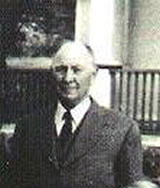

|
Indeks: |
Soos die meerderheid wit Suid-Afrikaners, is ons Hennings mos ook groot rugby-ondersteuners. Ongelukkig blyk dit of ons meer suksesvolle "ondersteuners" as "spelers" is, want mens hoor selde van 'n Henning jongman wat op die speelveld uitblink. Die enigste Henning wat werklik op die hoogste vlak uitgeblink het, is b9.c1.d2.e7.f1.g3.h3. Tappe Henning, wat as Internasionale skeidsregter naam gemaak het.
Dit het onlangs onder ons aandag gekom dat Philip Burger, die kookwater vleuel van die Vrystaatse Cheetahs se Super 14 en Curriebeke-spanne, se ma 'n nooi Henning is. Sy is b5.c1.d3.e1.f1.g5.h1. Hendrina Johanna Hubbard (gebore Henning). Haar noemnaam is Erna. Philip is natuurlik ook 'n Springbok sewes-Rugby speler en het Suid-Afrika al verskeie kere in Internasionale Sewes-toernooie verteenwoordig, waar hy elke keer een van die uitblinkers was. Philip het in 1998 aan die Hoërskool Randburg gematrikuleer. Hy studeer B.Comm Bemarking aan die UOVS waar hy vir die Shimlas, asook Vrystaat O/21 en Vrystaat Cheetahs rugby gespeel het. Hierna het hy professionele Curriebeker rugby vir die Pumas (Mpumalanga) gespeel, voordat die Cheetahs hom weer nader getrek het.
Philip is 'n seun uit Erna se eerste huwelik en sy is sommer baie trots op hom.


Gedurende Julie 2007 ontvang Bondsekretaris, Olivier Henning 'n telefoonoproep (opgevolg met 'n e-posbrief) van 'n sekere Anthonie Snijders. Hy is op soek na enige gegewens oor 'n Henning wat gedurende die 1890's Staatsvee-arts vir die Republiek van die Oranje-Vrystaat was.
Olivier het onmiddelik vir hom laat weet dat hy slegs bewus is van een Henning wat in die negentiende eeu gebore is, wat 'n vee-arts geword het, nl. b1.c6.d14.e5. Michiel Wilhelm Henning *27-10-1894. Hy het egter eers in 1919 gekwalifiseer en het wel 'n beroemde vee-arts en akademikus geword, aan wie talle internasionale pryse toegeken is. In die Henning Familiekroniek word breedvoerig oor hom verslag gedoen.
Dit was egter nie die persoon na wie Anthonie gesoek het nie. Mettertyd het Anthonie laat weet dat hy gegewens opgespoor het in die boek van Posthumus,P.J. BVSc M.B.E. - 10th Edition of Past Veterinarians in South Africa.
Volgens hierdie boek is die betrokke persoon se naam Otto Henning. Hy is op 21-11-1865 in Duitsland gebore. Hy verwerf gedurende 1885 die Dr Med Vet graad aan die Universiteit van Stuttgart in Duitsland. In Maart 1885 word hy aangestel as Assistant Vee-arts in die Kaap van Goeie Hoop Administrasie, met hoofkwartier in Kaapstad. Hier bly hy tot 1896.
Op 1-11-1896 word hy na die Oranje Vrystaat gestuur om te help met die beheer van Runderpes. Gedurende 1897 keer hy terug na die Republiek van die Oranje Vrystaat en dien as Staatsvee-arts tot 1900. Weens die oorlog verwissel hy hierna kort-kort van posisie.
1900 - 1901 dien hy in die SA Constabulary (van die Britse gevegsmagte)
1901 - 1902 was hy die Staatsvee-arts van die Basoetoland regering
1902 - 1903 word hy die Hoof vee-arts van die "Orange River Colony" (die Oranje Vrystaat na die oorname deur die Britte)
1904 - 1907 dien hy in die "Repatriation Department"
In 1907 word hy aangestel as die hoof van die Departement Landbou van Duits-Wes Afrika (die Namibië van vandag) totdat hy in hegtenis geneem is deur die Suid-Afrikaanse magte wat die gebied in 1915 oorgeneem het.
In 1921 is hy heraangestel en dien as Staatsvee-arts te Keetmanshoop tot 1923.
Hy sterf op 10-11-1933 in die ouderdom van 68 jaar te Grootfontein, SWA.
In 1938 het sy weduwee 'n volledige stel van die Kaap van Goeie Hoop se Landboujoernale vir die jare 1890 tot 1895 aan die Suid-Afrikaanse Veterinêre Mediese Vereniging geskenk. Daar is ook aangeteken dat Otto Henning die regering van die Bechuanaland Protektoraat (Botswana) met die beheer van Runderpes gehelp het, toe hy gedurende 1897 te Palapye gestasioneer was. Daar word onder andere gemeld dat hy op 3 April 1897 'n gesprek met die beroemde Sir Arnold Theiler oor Runderpes gevoer het terwyl laasgenoemde op pad na Mafeking was.
Hier is dus 'n Henning wat nie by enige van die Suid-Afrikaanse Henning stamme inpas nie, maar wat diep spore in die veterinêre geskiedenis van Suid-Afrika getrap het. In die 27 jaar wat Olivier Henning navorsing na die Hennings van Suid-Afrika doen, het hy nêrens op iets van Otto Henning of enige moontlike kinders afgekom nie. Dit sal dus spesiale navorsing in Namibië verg om te bepaal of daar enige spoor van nasate gevind kan word.

In die vorige Haantjie het ons gesuggereer dat daar skynbaar nie meer veel Henning babas gebore word nie, want ons hoor omtrent nooit van enige geboortes meer nie. Binne 'n paar dae nadat die Nuusbrief verskyn het, het ons die eerste reaksie ontvang. b1.c3.d10.e10.f4.g2. Pieter Henning van Pretoria het, saam met 'n groot hoeveelheid bywerkings, vir ons laat weet van die geboorte van sewe Henning babas sedert 1999 onder die nasate van sy oupa (b1.c3.d10.e10. Jacobus Henning *22-7-1883)
b1.c3.d10.e10.f3.g1.h1.i1. Louis Barend Henning *Windhoek, Namibië 30-3-1999
b1.c3.d10.e10.f3.g1.h1.i2. Renier Henning *Windhoek, Namibië 7-4-2000
b1.c3.d10.e10.f3.g1.h2.i1. Eunice Henning *Otjiwarongo, Namibië 20-7-1999
b1.c3.d10.e10.f3.g1.h2.i2. Barnie Henning *Otjiwarongo, Namibië 23-1-2001
b1.c3.d10.e10.f3.g1.h2.i3. Christelle Henning *Otjiwarongo, Namibië 21-9-2002
b1.c3.d10.e10.f4.g1.h1.i3. Marco Tersius Henning *Windhoek, Namibië 7-1-2003
b1.c3.d10.e10.f4.g3.h1. i1. Hento Henning *Windhoek, Namibië 30-3-2007
Intussen het ons ook verneem van die geboorte van 'n tweede baba vir b5.c5.d4.e4.f1.g4.h1. Gerrit Francois (Francois) Henning *19-6-1961 en sy vrou Sanet Klopper van Johannesburg. Heinrich Henning is op 27-8-2007 te Johannesburg gebore.
b1.c6.d3.e9.f7.g1.h3. Johannes Stephanus (Johan) Henning en sy vrou Madalein van Vereeniging se tweede kind, Johannes Stephanus Heinrich is op 20-4-2007 gebore. Johan het ook vir ons laat weet dat sy tweeling broer, Johannes Marthinus en sy vroutjie, Chrisna (gebore van Schalkwyk) op 29-1-2005 'n baba dogtertjie, Stephanie gehad het.
b1.c6.d3.e7.f8.g2. Pieter Hendrik Henning van Doornpoort het ook laat weet dat sy broer Ferdinand (g4) en sy vroutjie Emza op 4-4-2005 'n dogtertjie, Jade ryker geword het.
Dit wil dus lyk of ons onnodig bekommerd was en dat die normale kwota babas darem van tyd tot tyd die lig sien.

Oudste Henning Oorlede. Op 4 September 1906 is 'n baba dogtertjie vir b5.c4.d7.e1. Jacobus Cornelis Stephanus Henning *19-7-1872 en sy vrou Rachel Elizabeth (gebore Mynhardt) te Winburg in die OranjeVrystaat gebore - hul eersteling. Hulle het haar die name Gertruida Susanna gegee - vernoem na haar ouma aan ma se kant. Hierdie Gertruida Susanna Henning was bestem om die eerste gebore Henning in Suid-Afrika te word wat ouer as 101 jaar geword het, want sy is eers oorlede op 11 September 2007, een week na haar 101 ste verjaardag. Helene Maria Henning (gebore Terblanche) die tweede vrou van b1.c3.d7.e9. Nicolaas Johannes Henning het wel 'n paar maande ouer geword, maar sy was 'n aangetroude Henning. Die vorige oudste gebore Henning was b1.c6.d6.e1. Johannes Stephanus Henning (oom Hansie) *3-2-1871, wat 100 jaar en nege maande oud geword.
Die gesin van Jacobus Cornelis Stephanus het in 1923 vanaf Winburg na Johannesburg verhuis en in dieselfde jaar na Benoni, waar Jacobus 'n mynwerker geword het. Hy het ook by die Heilsleër aangesluit en het die rang van kaptein beklee. Die hele gesin was baie musikaal. Pa Jacobus het die viool en chello bespeel, terwyl ma Rachel klavier gespeel het. Gertruida het dus grootgeword in 'n musikale huis en het sy vanaf die ouderdom ses jaar sang afrigting begin kry.
Met hul verhuising na Benoni, ontmoet Gertruida haar toekomstige eggenoot, Richard Steenkamp, met wie sy op 9 Mei 1924 in Benoni getroud is. Hulle het 'n gelukkige huwelik van meer as 50 jaar gehad voordat haar man haar ontval het. Hulle het twee dogters, Susie en Gertruida gehad en met haar dood kon sy spog met vyf kleinkinders, agt agterkleinkinders en vier agter-agter kleinkinders.
Met haar pragtige sangtalent het Gertruida reeds in die jare twintig bekend begin word as Benoni se "Nagtegaal". Sy het plaaslik sowel as in die buiteland begin optree. Sy het verskeie toekennings vir haar sang verower, onder andere diplomas van Stratford-upon-Avon en 'n borsbeeld van Shakespeare. Sy het oorsee getoer as deel van die geselskap wat Puccini se Tosca opgevoer het. Sy het ook Schubert en Duitse lieder gesing.
Tydens een van haar besoeke aan Rome het sy selfs Pous Johannes Paulus II ontmoet en hy het 'n plaket aan haar oorhandig. Gertruida het ook 'n goue diploma in Jerusalem ontvang vir die wyse waarop sy "Die Heilige Stad" gesing het. By Tiberius het sy vir 'n groep Sweedse sendelinge gesing en in 1925 het sy die Prins van Wallis ontmoet, toe hy Benoni besoek het. In 1971 het die burgemeester van Benoni 'n borsbeeld van Mozart aan haar oorhandig.
Gertruida se talle prestasies sluit onder andere die volgende in: Erelidmaatskap van die "East Rand Music Society"; "President of the Benoni Ladies Choir"; Lewenslange lid van die Nasionale Raad vir Vroue; Lid van die Transvaal en Muziek Genootskap van Johannesburg; Lid van die Gilde van "St Theresa for the Blind" (wat na haar as "hulle nightingale" verwys het); Lid van die Vlaamse Sending en muziek Leven in België en 'n "messenger of Padua" in Italië.
Gertruida was 'n vriend van verskeie van die wêreld se heel bekendste sangers soos Erna Zak,
Kenneth Mc Keller, Ivan Rebroff, Heinrich Schlusnuss en Elsa Hellweg.
b7.c8.d8.e5.f1. Melody Maria Buitendag (gebore Henning) *22-4-1948 van Kokstad is op 17 September 2007 oorlede na 'n baie lang en pynvolle siekbed. Ons het in die vorige Nuusbrief (no 91) berig oor haar suster, Memory (getroud Wagenaar) wat slegs vyf maande vroeër oorlede is. Melody het groot geword op haar pa se plaas, Kerkplaas, in die distrik van Maclear, bo in die Drakensberge in die Noord-Oos Kaap. Na haar huwelik met Louis Buitendag, wat 'n polisieman van beroep is, het hulle op verskeie dorpe in die Noord-Oos Kaap/Transkei gewoon voordat hulle die laaste paar jaar na Kokstad verhuis het.
b1.c3.d10.e9.f2. Christiaan Rudolf Henning *19-8-1911.
Karen Flanegan, kleindogter van oom Boet Henning van Huis Vergesig, Zastron het vir ons laat weet dat haar oupa op 1 Oktober 2007 in die ouderdom van 96 jaar oorlede is. Oom Boet, 'n gebore en getoë Zastronner het sy laaste jare in Huis Vergesig deurgebring. Voor dit het hy vir 'n klompie jare by sy seun Johannes Hendrik (Tinkie) en skoondogter Santa, op hul plaas Oranjedal, net buite Zastron gewoon.
Mauritz Henning van Theresapark, Pretoria, wat die hooforganiseerder van die 2004 Henning fees te Pretoria was, het destyds 'n aantal CD's gesny, met titel: Henning Okkasies". Die CD bevat visuele materiaal oor
1. Die Henningfees van 8-10 Oktober 1988
2. Die inwyding van die Henning museum- uitstalling te Aliwal Noord 4/5 April 1992
3. Besoeke aan Elandskraal en
4. Die Henningfees in Bloemfontein van 16 April 1994
Daar is nog 'n hele paar van hierdie CD's beskikbaar. Dit is beslis die moeite werd om so `n CD te besit. Die prys is R100 [Posgeld ingesluit] en is verkrygbaar by: Mauritz Henning, Posbus 43463, THERESAPARK, 0155.
Tel 012 5425549; Sel 076 9947092; E-pos mauhen01@hotmail.com

Sedert die begin van 2007 het ons die Henning Familiekroniek op Laseskyf (CD) aansienlik bygewerk. Heelwat nuwe gegewens is ontvang en dan het ons al die foto-albums beter ge-orden.
Daar is gevolglik besluit om weer, soos verlede jaar, die CD tot einde Desember teen 'n verminderde prys beskikbaarte stel, nl R120.00 (alles ingesluit), in plaas van die gebruiklike R150.00 plus posgeld en verpakking.
Ons het ook nog 'n aantal ander Henning aandenkings beskikbaar, wat almal pragtige kersgeskenke uitmaak:
Teelepels (goud geplateer) - R28.00 elk
Lapelwapens - R20.00 elk
Mansjetknope - R60.00 / stel
Skryfblokke - R24.00 / 50 bladsye blok
Bierbekers (slegs 2 beskikbaar, ongelukkig verskillende soorte) - R40.00 elk
Waar posgeld en verpakking normaalweg bygevoeg moet word, stel ons al hierdie items beskikbaar sonder die betaling van addisionele posgeld. Ons wil graag meld dat die mansjetknope baie deftig vertoon en beslis 'n aanwins sal wees vir die klerekas van enige Henning man. Kom ons neem die leiding en begin weer mansjetknope dra - veral as dit sulke pragtige goed is! …. en as julle die goed nie wil dra nie, koop dit net en spog daarmee by julle vriende!!
Bestellings kan per brief, telefoon of e-pos geplaas word. Betaal die geld direk in die Familiebond se bankrekening: ABSA Bank Villiersdorp (tak 334-612); Rekening no 2890 610 423; Rekening naam - Henning Familiebond


b1.c6.d3.e7.f8.g2. Pieter Hendrik Henning *2-10-1949 van Doornpoort naby Pretoria het vir ons laat weet dat sy familie in besit is van 'n geskiedkundige dooprokkie wat dateer uit 1866. Die eerste baba wat in die rokkie gedoop is, was Aletta Susanna Catharina Schoeman. Sy was een van 'n tweeling. Daarna is die rokkie van geslag na geslag oorgedra en is al daardie geslag se babas in die rokkie gedoop. Pieter se oumagrootjie en sy ouma, aan sy ma se kant, asook sy ma is in die rokkie gedoop.
Pieter se ma het uiteindelik die rokkie bewaar. Sy het al haar kinders in die rok gedoop - en so ook al die kinders van sy ma se suster, Marie. Na Pieter se ma se dood is die rokkie deur Marie bewaar en na haar dood het die rokkie by Pieter beland. Al vier sy kinders is in die rokkie gedoop.
Daar is reeds ooreengekom dat die dooprokkie deur Pieter se seun, Abraham Stephanus (Braam) (h4) oorgeneem sal word.
Ons verneem graag of daar ander Henning families is wat op 'n soortgelyke wyse iets van geslag tot geslag oordra?
b7.c8.d8.e3.f4.g2.h1. Lenélle Henning *23-1-1998, 'n Graad 3 leerling van die Laerskool Kenridge en dogter van Leonard - en Chantellé Henning van Van Riebeeckshof, Bellville het gedurende September 2007 aan die Tygerberg Internasionale Eisteddfod kompetisie deelgeneem, waar sy ondergemelde gedig voorgedra het.
Lenélle was een van 29 Graad 3 meisies wat deelgeneem het en was een van slegs vyf wat die kompetisie met Hoogste Lof (95%) geslaag het. Vier van hierdie vyf was leerlinge van Kenridge Laerskool - 'n besondere prestasie vir een skool.
BAIE GELUK LENéLLE! Hou so aan, een van die dae word jy 'n bekende aktrise.
|
| |
|
Ek is nie een wat sommer praat, Daar is tant Annie se oom Koot, En dan is daar ook ou tant San |
En verder af daar woon oom Loek. Ou juffrou Swart is mal oor spoed Jy kan die wêreld vol gaan ry, |

Ons lees in die Sondag koerant Rapport van 30 September 2007 dat Lou Henning, (b1.c6.d11.e10.f2. Lourens Jacobus Henning *14-9-1942) Rapport se spotprent kunstenaar na bykans dertig jaar sy tekenpen gaan neersit.
Lou (65) wat met sy weeklikse spotprente lesers laat skaterlag het met sy fyn humor, het aan die einde van September 2007 afgetree. Hy het in sy loopbaan vir drie groot Afrikaanse koerante geteken: Die Transvaler, Die Vaderland en Rapport. Dan het hy natuurlik ook van tyd tot tyd vir ons Henning Nuusbrief tekeninge gemaak.
Lesers van Rapport gaan beslis Lou se weeklikse bydraes mis.

Saam met hierdie nuusbrief stuur ons reeds die kennisgewings uit waarin ons aandui dat dit hoog op prys gestel sal word as u 2008 finansiële bydraes voor einde Maart 2008 aangestuur kan word. Met alles wat duurder word, moet die Familiebond ook maar die rieme dun sny om alles ingepas te kry.
Ongelukkig is daar steeds 27 lede wat geen bydrae vir 2007 gemaak het nie. Ons doen maar weer 'n beroep op hierdie lede om u 2007 bydrae saam met u 2008 bydrae aan te stuur. As u werklik nie kan bekostig om 'n bydrae te maak nie, verwittig ons dienooreenkomstig, sodat ons kan aanhou om die Haantjie aan u te stuur. Andersins moet ons, ongelukkig, u as lid skrap.